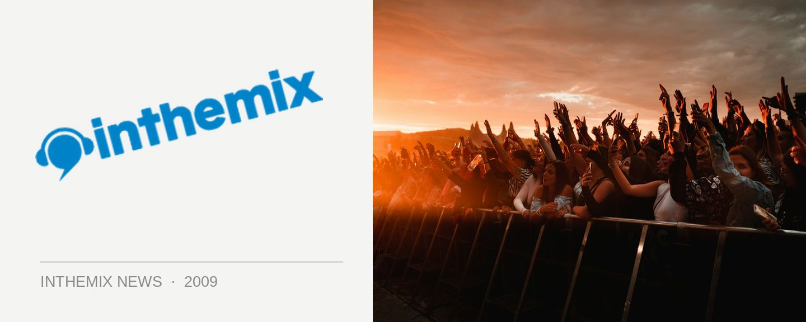

Australia's first Sensation photos!
On Wednesday 31st December 2008, and after months and months of hype and anticipation, the world-renowned Sensation party finally made it’s long awaited debut at Telstra Dome in Melbourne. After years of looking up the iconic ‘Oak of Love’ from afar, Australian punters finally got to view the spectacle in person. Check out Australia’s first Sensation photos!
Sensation finally made it’s long awaited debut on NYE – check out the photos!
> Australia’s first Sensation photos.
Did Sensation manage to live up to the hype for you? Stay tuned over the next week for plenty of the post-event coverage, and head to our Festival Page for plenty of news, interviews, DJ mixes of what went down on NYE.